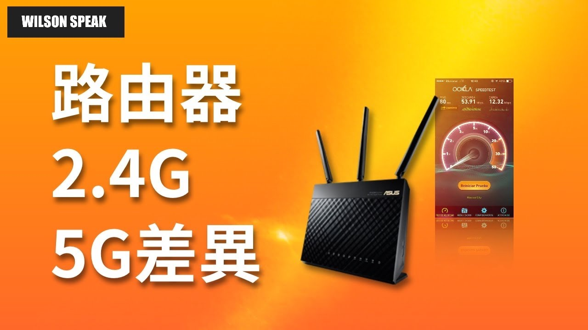

2.4 GHz 和 5 GHz 怎麼選？房間連得上，比只看格數更重要

原片發布 2020-04-06 · 點封面看原片。
同一台路由器，手機有時連 2.4 GHz、有時連 5 GHz。哪個才好？如果你正在房間視訊，重點是那個位置能不能穩定完成通話，不是頻段名稱看起來比較新，也不是訊號格數比較多。
這篇延伸自 2020 年的雙頻主題影片。把距離、隔間、干擾與裝置能力一起看，再用相同位置做比較，會比背一個「永遠選哪個」的答案實用。
兩個頻段，都是你家的 Wi-Fi
2.4 GHz 和 5 GHz 說的是 Wi-Fi 使用的頻率範圍，兩者都可能由家中的路由器提供。5 GHz 不等於手機的行動 5G，也不能單靠頻段判斷 Wi-Fi 世代；它們是不同的分類。
你的設備是否能使用某個頻段，須看路由器與終端規格。較多舊裝置和智慧家電支援 2.4 GHz，許多手機與筆電也支援 5 GHz，但不能把「現在的裝置」全部視為相同。先核對手上機器，才能知道哪些選項真的能測。
走得遠和跑得快，是不同條件
常見家用條件下，2.4 GHz 比較有機會維持較遠距離或穿越障礙後的連線，5 GHz 則常有較高吞吐量的使用空間。不過牆面材質、頻道頻寬、干擾與設備設計都會影響結果，不能從頻率直接推算每個房間的速度。
如果書房 5 GHz 收不到好訊號，可以比較 2.4 GHz 是否更符合實際用途；若靠近路由器，則看看 5 GHz 的表現。兩個頻段都不理想時，還要調整擺位或考慮合適的訊號點，而不是一直要求手機黏在某個頻段。
- 先在路由器附近用同一台裝置比較兩個頻段。
- 再到真正會卡的房間，用同一個服務測試。
- 記錄位置與連線資訊，不只記訊號格數。
| 考量 | 2.4 GHz | 5 GHz |
|---|---|---|
| 常見覆蓋條件 | 較遠或有障礙時可能較有利 | 距離與隔間影響較明顯 |
| 吞吐量機會 | 較容易受到擁擠影響 | 合適條件下常有較高吞吐機會 |
| 裝置支援 | 許多舊裝置、家電支援 | 仍須核對終端規格 |
一般特性比較，不是你家現場的測速結果。兩邊都要看干擾、頻道配置與設備。
訊號滿格，還是可能有干擾
訊號格數主要反映接收強度的一部分，不會替你顯示全部干擾、共用無線資源與上游負載。即使連得很強，同時有很多裝置使用，或周圍有干擾來源，實際傳輸也可能不順。
2.4 GHz 容易遇到其他 Wi-Fi 與部分家電、藍牙等來源的影響；5 GHz 也不是完全乾淨。若只在某個時段變差，先記下時間和當時活動，不能直接確診是鄰居。每次只調整一項位置或設定，觀察效果後再決定保留。
同一個名稱，手機不一定連到你想的頻段
同一個 Wi-Fi 名稱可以涵蓋多個頻段，系統可能用頻段引導等方式協調，但終端自己的連線決策也會影響結果。你站在路由器旁，手機也未必立刻切到想測的頻段；忘記網路再加入，同樣不能保證一定選中它。
為了排查，有時可依系統支援暫時區分名稱，或用管理頁查看裝置目前的頻段。長期要共用或分開名稱，則看你的 Mesh 設計、終端和管理需求。不要只為了測一次就把全家長期設定拆掉，先保留可回復的原配置。
- 先查裝置或管理頁能否顯示目前頻段。
- 需要分開測時，依系統文件安排可回復的測試設定。
- 測完再決定長期配置，不把分開名稱當成通用最佳解。
想知道哪個好，拿同一台裝置比較
比較時固定同一台裝置、同一個位置與同一項工作，盡量讓其他條件相近。可以先測速，再做一次平常的視訊或播放。若用兩支規格不同的手機各連一個頻段，就無法把差異只歸因於頻段。
最高下載數字之外，也看看是否反覆中斷、聲音是否斷續，以及移動時的體驗。某次速度相同，不代表兩邊覆蓋完全一樣；結果不同，也可能同時有其他瓶頸。先整理現象，再縮小範圍，避免把一次測試當成全家的結論。
智慧家電連不上，先查支援條件
智慧家電配網前，先查它支援哪些頻段、加密方式，以及官方 App 的要求。有些只支援 2.4 GHz，但雙頻共用名稱本身不一定造成失敗；不要只看到連不上，就直接認定它誤連到了 5 GHz。
依原廠文件安排配網即可。若文件提供暫時的相容模式或指定頻段流程，先記錄原設定再操作；不要任意關掉無線加密或改地區設定。完成後確認家電與其他裝置都能正常使用，再保留確定有幫助的變更。
- 確認智慧家電規格書是否標示支援5GHz Wi-Fi。
- 配網時暫時關閉路由器5GHz頻段或選擇2.4G SSID。
- 檢查路由器地區設定是否與裝置要求相符。
- 完成綁定後恢復正常雙頻設定並測試連線。
你可能還想問
5 GHz 一定比較快嗎？
不一定。在合適訊號和設備條件下常有較高吞吐機會，但房間隔間、干擾與整條路徑都會影響，需在使用位置比較。
分開名稱，手機就不會自動換網路嗎？
終端仍可能依已儲存網路與自己的機制選擇。名稱可以幫助辨識與測試，不能當成保證切換行為的控制。
家電只支援 2.4 GHz，要把 5 GHz 全關掉？
通常先按該家電與路由器的官方配網方式處理，不必把全家 5 GHz 長期關閉。若需暫時調整，完成後驗證再回復。
影片與參考資料
原片發布 2020-04-06。文章整理 2026-11-14，依影片公開標題、說明延伸，並以官方資料校訂。實際設定請對照你的型號與版本。